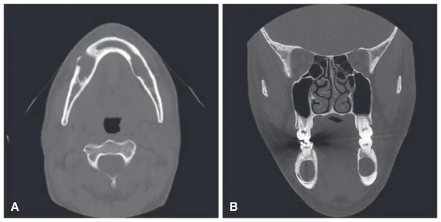
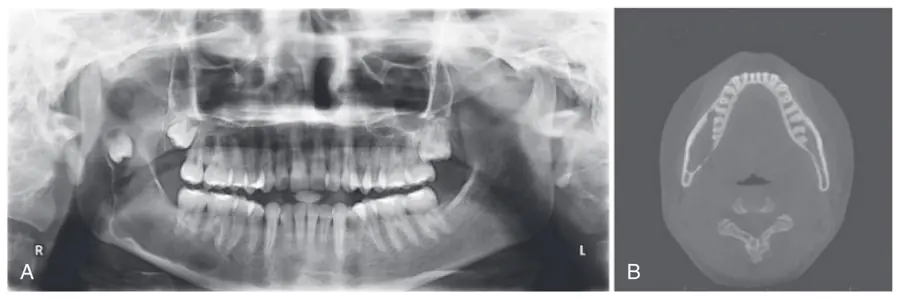

نسخه استخراجشده؛ ترجمه یا تأیید علمی انجام نشده است. وضعیت: captured
همهی کیستها با فشار اسمزی بزرگ میشوند — بهجز این یکی.

سازوکار متفاوت: اپیتلیوم کراتوسیست ادنتوژنیک (OKC) از لامینا دنتال میآید و توان رشد ذاتی دارد، ناشی از جهش در ژن PTCH که تکثیر و تمایز سلولی را کنترل میکند. یعنی کراتوسیست فقط منتظر فشار مایع نمیماند؛ خودش رشد میکند.
و بافتشناسیاش: اپیتلیوم کراتینیزهی نازک، ۴ تا ۸ لایه سلول. کراتین ریزشکرده در لومن، همان مایع غلیظ و زردرنگ پنیرمانند را میسازد که در آسپیراسیون دیده میشود.
و علت عود بالا: جوانههای سلولی از لایهی بازال به بافت همبند زیرین رشد میکنند و میکروکیستهای ساتلیت میسازند که مستقلاً بزرگ میشوند. قطعات جامانده پس از جراحی، همانجا دوباره کیست میسازند.
محل: چون لامینا دنتال در همهی نواحی دنداندار هست، OKC هرجا میتواند بیاید؛ ولی شایعترین محل بدنهی خلفی مندیبل و راموس است، با اپیسنتر بالای کانال آلوئولار تحتانی.
و مهمترین ویژگی رفتاری — همان که در امتحان میآید: OKC در مندیبل طولی و تونلمانند درون استخوان رشد میکند، بدون اتساع محسوس. نتیجهی بالینیاش خطرناک است: کشف دیرهنگام، چون هیچ تورمی توجه بیمار را جلب نمیکند.
و دو استثنای این قاعده: در راموس بهخاطر بُعد باریک مدیولترال، اتساع بارزتر دیده میشود؛ و کنار یک فضای هوایی مانند سینوس یا حفرهی بینی، رشد مرکزگرا و بادکنکی میشود — یعنی کلاسیکتر برای کیست.
ساختار داخلی OKC معمولاً رادیولوسنت است؛ کانونهای کراتین ریزشکرده میتوانند نقاط رادیواوپک بسازند، و سپتای منحنی داخلی ظاهر مولتیلوکولار میدهند.

و افتراقهای کلیدی — هر کدام با یک نشانهی جداکننده:
و انتخاب روش تصویربرداری، تصمیم بالینی دارد: اگر روی تصویر تخت پرفوریشن کورتیکال دیده شد، MDCT برای بررسی گسترش به بافت نرم؛ در غیر این صورت CBCT کافی است.
و پیگیری — این عدد را حفظ کن: عودها معمولاً در ۵ سال اول رخ میدهند، ولی میتوانند تا ۱۰ سال یا بیشتر به تأخیر بیفتند. یعنی پنج سال بدون عود، پایان پیگیری نیست.
و سندرم کارسینوم سلول بازال نووید (گورلین–گولتز): اختلالی اتوزومال غالب از جهش همان ژن PTCH. تظاهراتش: کارسینومهای سلول بازال متعدد پوست، پیتینگ کف دست و پا، دندهی دوشاخه، کلسیفیکاسیون فالکس مغزی، مدولوبلاستوما و OKCهای متعدد.
و دو عدد کاربردی: حدود ۲۰٪ تشخیصهای جدید، جهش خودبهخودی هستند — یعنی سابقهی خانوادگی منفی سندرم را رد نمیکند. و تشخیص معمولاً در دههی دوم یا سوم زندگی گذاشته میشود.
و افتراق سندرم از سایر رادیولوسنسیهای متعدد: مولتیپل میلوما حاشیهی کورتیکه و شکل هیدرولیک ندارد. کروبیسم ضایعات مولتیلوکولار دوطرفه با اپیسنتر در راموس میسازد، اتساع چشمگیر دارد و دندانها را به سمت قدامی جابهجا میکند.
نوع سؤال: ساخت کلمه · 5 خانه
حروف منبع: س · م · ر · و · ا